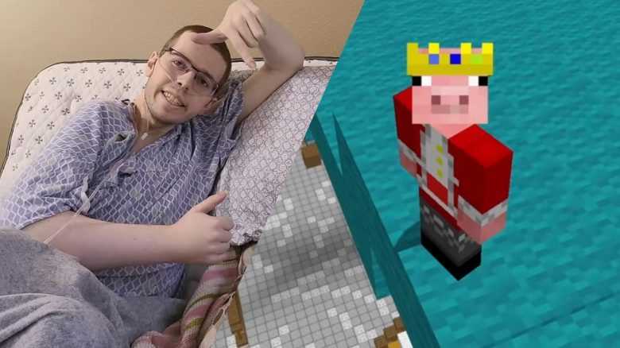
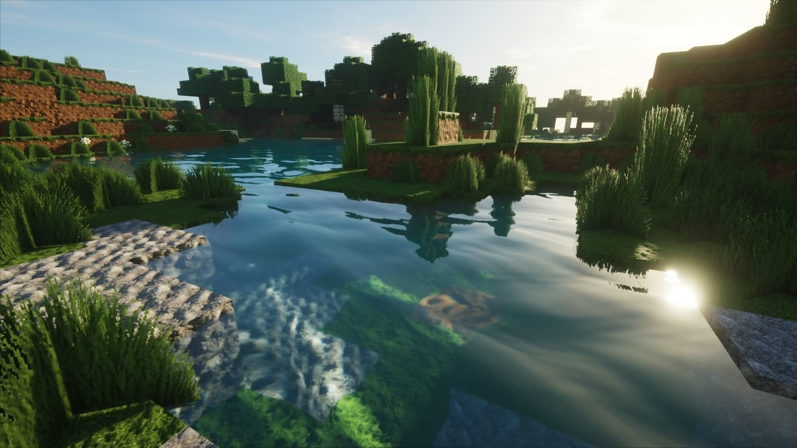

A teenager has created ‘the entire known universe’ in Minecraft over the course of two months.
Christopher Slayton meticulously replicated the Earth, as well as planets, stars, galaxies, and space gas - using a globe to "measure the exact location of every continent to perfectly replicate the planet."
In the video, the 18-year-old Mr Slayton explained that he started skydiving so he could see the planet from a different perspective, before using mathematical concepts to make sure that the universe was made to an accurate scale.
In order to fit all of the planets in the universe into the simulation, every planet would need to be 700,000 times smaller - proportionally meaning that a single Minecraft block would take five days to walk across in the real world.
Minecraft YouTuber Technoblade has died at the age of 23.
The American gamer, whose real name was Alex, died of cancer.
His family confirmed his death by posting an emotional farewell video to his 10 million followers, titled “so long nerds”.
The clip contained a message written by Alex hours before his death. It was read out by his father, and it began: “Hello everyone, Technoblade here. If you’re watching this. I am dead.”
In the farewell message, he had also written: “Thank you all for supporting my content over the years.

“If I had another hundred lives, I think I would choose to be Technoblade again every single time as those were the happiest years of my life.”
Alex’s father thanked fans in the farewell video, noting: “You meant a lot to him.”
He announced that a portion of proceeds from his late son’s merchandise would now be donated to charity.
Millions of fans would tune in to watch Alex, under his YouTuber name Technoblade, playing sandbox video game Minecraft and talking amusingly about his life.
A statement from the family said in part: “This past year has had a lot of rough spots for our son as he battled stage four cancer. But he didn’t complain, and kept using his famous strategic mind to try to beat what he knew were almost impossible odds.
“My son’s bravery on this path was a shining lesson to all of us who were privileged to walk it with him. Thank you for sharing his journey through it all, as he did the work he loved for his beloved fans.”
Minecraft has received a vast graphic upgrade that completely redefines how the game looks.
The world's best-selling game has been updated with new lighting and a completely different appearance, which makes the game look vastly better than it did before.
The upgrade is the result of a collaboration between developers Mojang and Microsoft, and Nvidia. Together, they will bring ray tracing to the game, which allows light inside the blocky world to be rendered in a newly realistic way.

The updates will come to the Windows version of the game soon. And it will be available as a free upgrade to all PC users, allowing anyone with an Nvidia RTX enabled graphics card to play it.
“Ray tracing sits at the center of what we think is next for Minecraft,” Saxs Persson, the creative director of Minecraft at Microsoft, said in a statement. “RTX gives the Minecraft world a brand-new feel to it.
Nvidia claims that the changes will "affect almost every pixel of every scene" and make lighting, reflections, shadows and more appear different than they did before.
It will do so using path tracing, which is a form of the ray tracing technology that allows light to be drawn realistically and in real time. That will allow light to move naturally as it would in real life, even as players change up the blocks that make up the world.
The ray tracing technology will be moddable in the same way that the game itself is. That will allow players to create new kinds of ray traced content, building them in the same way they do mods for the rest of the Minecraft game.